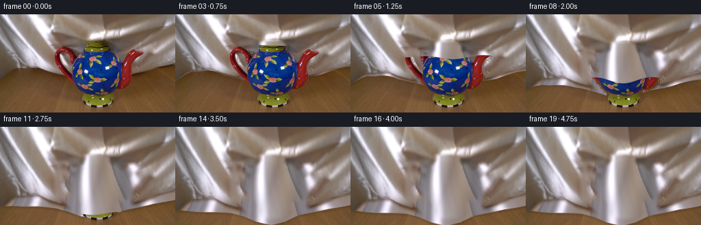
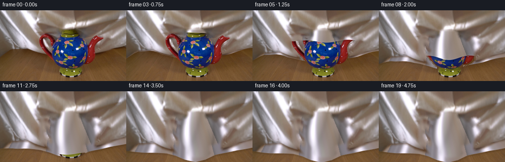
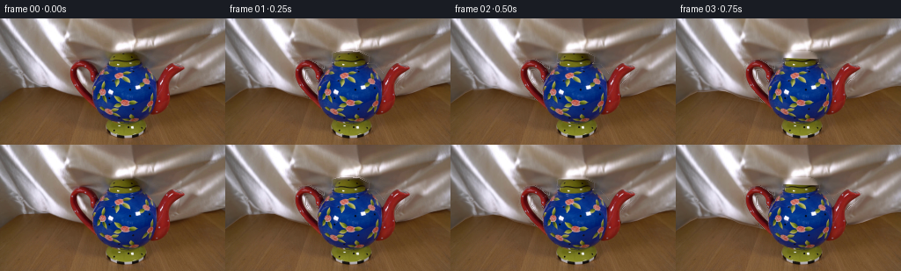

CODING AGENTS AS PIXEL WORLD MODELS
traex/GPT-6.1-Sol · 0158
点击播放 · 原生 RGB 像素
逐轮保存的候选
回放视频、检查图与代码变化。
每份候选均可单独播放。实际图片检查记录在下方工具轨迹中。
候选 01播放与检查图
点击播放 · 原生 RGB 像素

展开代码变化
--- 上一保存版本
+++ 本次保存版本
@@ -0,0 +1,141 @@
+from pathlib import Path
+import numpy as np
+from PIL import Image, ImageDraw
+import cv2
+from scipy.ndimage import gaussian_filter, distance_transform_edt
+import artifact_io
+
+ROOT = Path(__file__).resolve().parent
+H,W=144,256
+Y,X=np.mgrid[:H,:W].astype(np.float32)
+
+def polygon_mask(polygons):
+ image=Image.new('L',(W*4,H*4))
+ draw=ImageDraw.Draw(image)
+ for points in polygons:
+ draw.polygon([(round(x*4),round(y*4)) for x,y in points], fill=255)
+ return np.array(image.resize((W,H),Image.Resampling.LANCZOS)).astype(np.float32)/255
+
+def remap(a,x,y):
+ return cv2.remap(a.astype(np.float32),x.astype(np.float32),y.astype(np.float32),cv2.INTER_LINEAR,borderMode=cv2.BORDER_REFLECT_101)
+
+def smooth(a):
+ a=np.clip(a,0,1)
+ return a*a*(3-2*a)
+
+def main():
+ original=np.array(Image.open(ROOT/'first_frame.png').convert('RGB'))
+ im=original.astype(np.float32)
+ body=[(123,40),(130,38),(145,38),(153,39),(162,44),(162,49),(159,52),(170,53),(175,58),(181,66),(181,80),(180,94),(177,104),(170,113),(170,120),(172,126),(169,133),(159,137),(140,138),(126,134),(121,128),(119,122),(119,116),(113,110),(108,103),(106,92),(105,81),(106,73),(109,65),(113,58),(114,53),(124,51),(122,48)]
+ spout=[(175,69),(183,59),(187,53),(196,51),(201,54),(207,54),(211,56),(209,60),(203,65),(196,70),(192,76),(193,91),(193,103),(187,108),(176,112),(170,110)]
+ handle=[(114,60),(107,56),(104,53),(99,50),(94,47),(87,48),(82,51),(80,56),(79,61),(80,67),(82,72),(85,78),(90,83),(96,90),(102,96),(107,103),(114,107),(113,99),(107,92),(102,85),(97,79),(93,73),(90,68),(90,61),(91,57),(95,57),(99,60),(102,66),(106,70)]
+ obj=polygon_mask([body,spout,handle])
+ # Extend the photographic sheet behind its initially occluding ceramic vessel.
+ object_binary=cv2.dilate((obj>.08).astype(np.uint8),np.ones((5,5),np.uint8))
+ inpaint=cv2.inpaint(original,object_binary*255,4,cv2.INPAINT_TELEA).astype(np.float32)
+ hem0=np.interp(np.arange(W),[0,8,16,24,32,40,48,56,64,72,80,88,100,115,140,166,180,196,204,212,220,228,236,244,252,255],
+ [95,89,83,79,79,78,77,78,81,85,87,89,92,94,96,94,90,87,86,84,81,78,75,73,72,72]).astype(np.float32)
+ # A photographic silk swatch, with the oblique folds unskewed. No new
+ # texture source is used: every reflection and fine fibre comes from frame 0.
+ th,tw=64,96
+ v,u=np.mgrid[:th,:tw].astype(np.float32)
+ sy=18+v*20/(th-1)
+ q=-11+u*43/(tw-1)
+ sx=q+.78*sy
+ swatch=remap(im,sx,sy)
+ # Make the swatch periodic by a narrow smooth join at a shaded valley.
+ join=10
+ for j in range(join):
+ w=smooth(j/(join-1))
+ c=swatch[:,-join+j]*(1-w)+swatch[:,j]*w
+ swatch[:,-join+j]=c
+ swatch=swatch[:,:tw-join]
+ # Irregular longitudinal/radial pleats spread out under the crown and
+ # drape over the handle and spout instead of behaving like a rigid cover.
+ spread=.64+.0075*np.clip(Y-37,0,110)
+ ufield=(X-140)/spread+14*np.sin((X-83)/55)+3*np.sin(Y/29)
+ tx=np.mod(ufield*.95+40,swatch.shape[1]-1)
+ ty=15+20*np.sin(Y/57)+5*np.sin(X/47)
+ silk=remap(swatch,tx,ty)
+ silk[...,0]+=3
+ silk[...,1]-=1
+ silk[...,2]+=3
+ d=distance_transform_edt(object_binary>0).astype(np.float32)
+ filler=smooth(d/8)[...,None]
+ texture=inpaint*(1-filler)+silk*filler
+ # Extrapolate silk below the photographed free hem. This part only becomes
+ # visible as the cloth descends, leaving the rest of the table untouched.
+ below=smooth((Y-hem0[None,:]+3)/8)[...,None]
+ texture=texture*(1-below)+silk*below
+ tex0=texture.copy()
+ finalhem=np.interp(np.arange(W),[0,35,68,82,100,118,140,160,180,202,224,255],
+ [121,125,127,128,132,139,144,140,131,126,120,115]).astype(np.float32)
+ # Perspective surface bulges: the cloth contacts the knob, belly, handle,
+ # and tip. These also influence the flow of the fine specular folds.
+ crown=np.exp(-((X-140)/18)**2-((Y-42)/15)**2)
+ belly=np.exp(-((X-144)/35)**2-((Y-84)/36)**2)
+ tip=np.exp(-((X-197)/16)**2-((Y-57)/17)**2)
+ ring=np.exp(-((X-89)/13)**2-((Y-57)/18)**2)
+ rng=np.random.default_rng(158)
+ grain=gaussian_filter(rng.normal(0,.5,(H,W)).astype(np.float32),.35)
+ frames=[original.copy()]
+ for k in range(1,20):
+ t=k/4
+ # The first seconds are a continuous, unhurried lowering. The final
+ # half-second allows small silk ripples to damp naturally on the table.
+ move=smooth(t/3.85)
+ settle=np.exp(-max(t-3.85,0)*4)
+ sway=np.sin(t*2.6)*np.sin(min(t/3.85,1)*np.pi)*1.25
+ # Cloth originally behind the pot stretches forward, retaining the
+ # folds and illumination of the initial photograph.
+ fy=Y/(1+.35*move)
+ fx=X + .028*(fy-Y) + sway*(Y/H)
+ fx += move*(2.4*np.sin((Y-34)/22)*belly+1.2*tip-1.5*ring)
+ fy += move*(3.2*belly+2.6*crown+1.3*tip)
+ cloth=remap(tex0,fx,fy)
+ # Front-face swatch flows with the sheet, then acquires folds around
+ # the fixed solid object beneath it.
+ front_tx=np.mod(tx+2.1*move*np.sin(Y/27)+sway*.55,swatch.shape[1]-1)
+ front_ty=ty-6*move+1.5*np.sin(t*2+X/25)*move*(1-move)
+ front=remap(swatch,front_tx,front_ty)
+ # Soft contact normals and the lustrous highlights typical of silk.
+ shade=1+.10*crown+.055*belly+.08*tip+.05*ring
+ valley=np.sin((X-140)/(spread*6.3)+.055*Y)
+ shade+=move*(.055*valley-.035*np.maximum(-valley,0)**3)
+ front=front*shade[...,None]
+ front+=grain[...,None]
+ front[...,0]+=2
+ front[...,2]+=2
+ # Keep the foreground material smoothly joined to the surrounding
+ # original fabric; the core uses the highly resolved photographic silk.
+ front_weight=smooth((distance_transform_edt(object_binary>0)-1)/9)*.92
+ weight=front_weight[...,None]
+ cloth=cloth*(1-weight)+front*weight
+ # Outer free hem settles in scallops on the wooden surface.
+ wave=move*(1.25*np.sin(X[0]/12+t*2.0)*(1-move)+.95*np.sin(X[0]/17+.3))
+ hem=(1-move)*hem0+move*finalhem+wave
+ a=smooth((hem[None,:]-Y+.75)/1.5)
+ # Lowering edge across the face of the teapot: gravity gives a slightly
+ # uneven soft hem rather than a planar hard-edged wipe.
+ fall=np.clip((t-.10)/3.65,0,1)
+ fall=smooth(fall)
+ front_edge=35+110*fall+2.4*np.sin((X-80)/12+1.3*t)*np.sin(np.pi*fall)
+ front_edge+=5*np.exp(-((X-140)/30)**2)*np.sin(np.pi*fall)
+ covered=smooth((front_edge-Y+.8)/1.6)
+ # Teapot remains entirely stationary. Only the cloth moves.
+ a=np.where(obj>.01,a*covered,a)
+ a*=1 # keep scalar alpha explicit for RGB compositing
+ # Thin moving shade immediately underneath the lowering silk edge.
+ belowedge=np.exp(-((Y-front_edge-1.3)/2.0)**2)*obj*(1-covered)
+ plate=im*(1-.12*belowedge[...,None]*np.sin(np.pi*fall))
+ # A faint contact shadow on the table traces the newly lowered hem.
+ shadow=np.exp(-((Y-hem[None,:]-1.4)/2.2)**2)*move
+ shadow*=smooth((Y-92)/8)*(1-a)
+ plate*=1-.11*shadow[...,None]
+ result=plate*(1-a[...,None])+np.clip(cloth,0,255)*a[...,None]
+ frames.append(np.clip(np.rint(result),0,255).astype(np.uint8))
+ frames=np.stack(frames)
+ artifact_io.save(frames,ROOT)
+
+if __name__=='__main__':
+ main()
候选 02播放与检查图
点击播放 · 原生 RGB 像素


展开代码变化
--- 上一保存版本
+++ 本次保存版本
@@ -85,6 +85,7 @@
# half-second allows small silk ripples to damp naturally on the table.
move=smooth(t/3.85)
settle=np.exp(-max(t-3.85,0)*4)
+ settling=.28*np.sin(max(t-3.85,0)*8)*settle
sway=np.sin(t*2.6)*np.sin(min(t/3.85,1)*np.pi)*1.25
# Cloth originally behind the pot stretches forward, retaining the
# folds and illumination of the initial photograph.
@@ -95,11 +96,19 @@
cloth=remap(tex0,fx,fy)
# Front-face swatch flows with the sheet, then acquires folds around
# the fixed solid object beneath it.
- front_tx=np.mod(tx+2.1*move*np.sin(Y/27)+sway*.55,swatch.shape[1]-1)
- front_ty=ty-6*move+1.5*np.sin(t*2+X/25)*move*(1-move)
+ bulge_flow=-8*(X-144)/35*belly+3*(X-140)/18*crown-3*tip+2*ring
+ front_tx=np.mod(tx+move*bulge_flow+2.1*move*np.sin(Y/27)+sway*.55+settling,swatch.shape[1]-1)
+ front_ty=ty-6*move+move*(2*crown-3*belly)+1.5*np.sin(t*2+X/25)*move*(1-move)
front=remap(swatch,front_tx,front_ty)
# Soft contact normals and the lustrous highlights typical of silk.
- shade=1+.10*crown+.055*belly+.08*tip+.05*ring
+ shade=1+.09*crown+.045*belly+.08*tip+.05*ring
+ shade+=move*(-.09*belly*(X-144)/35-.105*belly*(Y-75)/38)
+ # Folds hang from the convex shoulders and the raised spout. Their
+ # shaded flanks give the covered vessel its three-dimensional volume.
+ left_fold=np.exp(-((X-(109+.006*(Y-85)**2))/3.0)**2)
+ right_fold=np.exp(-((X-(177-.004*(Y-85)**2))/3.3)**2)
+ drop=smooth((Y-57)/15)*smooth((134-Y)/15)
+ shade-=move*drop*(.075*left_fold+.095*right_fold)
valley=np.sin((X-140)/(spread*6.3)+.055*Y)
shade+=move*(.055*valley-.035*np.maximum(-valley,0)**3)
front=front*shade[...,None]
@@ -113,7 +122,7 @@
cloth=cloth*(1-weight)+front*weight
# Outer free hem settles in scallops on the wooden surface.
wave=move*(1.25*np.sin(X[0]/12+t*2.0)*(1-move)+.95*np.sin(X[0]/17+.3))
- hem=(1-move)*hem0+move*finalhem+wave
+ hem=(1-move)*hem0+move*finalhem+wave+settling*np.sin(X[0]/23)
a=smooth((hem[None,:]-Y+.75)/1.5)
# Lowering edge across the face of the teapot: gravity gives a slightly
# uneven soft hem rather than a planar hard-edged wipe.
@@ -122,12 +131,13 @@
front_edge=35+110*fall+2.4*np.sin((X-80)/12+1.3*t)*np.sin(np.pi*fall)
front_edge+=5*np.exp(-((X-140)/30)**2)*np.sin(np.pi*fall)
covered=smooth((front_edge-Y+.8)/1.6)
+ lip=np.exp(-((Y-front_edge+1.0)/.95)**2)*obj*np.sin(np.pi*fall)
+ cloth*=1+.065*lip[...,None]
# Teapot remains entirely stationary. Only the cloth moves.
a=np.where(obj>.01,a*covered,a)
- a*=1 # keep scalar alpha explicit for RGB compositing
# Thin moving shade immediately underneath the lowering silk edge.
belowedge=np.exp(-((Y-front_edge-1.3)/2.0)**2)*obj*(1-covered)
- plate=im*(1-.12*belowedge[...,None]*np.sin(np.pi*fall))
+ plate=im*(1-.20*belowedge[...,None]*np.sin(np.pi*fall))
# A faint contact shadow on the table traces the newly lowered hem.
shadow=np.exp(-((Y-hem[None,:]-1.4)/2.2)**2)*move
shadow*=smooth((Y-92)/8)*(1-a)
可观测工具轨迹
实际执行的命令与返回图片。
命令 1exit 0
/bin/bash -lc 'ls -la && cat prompt.txt && cat GENERATION_RULES.md'
命令 2exit 0
/bin/bash -lc "cat artifact_io.py && python - <<'PY'
from PIL import Image
import numpy as np
im=np.array(Image.open('first_frame.png')); print(im.shape)
# coarse numerical colour-map, no visual tools
pal=np.array([[240,240,240],[150,150,150],[50,50,50],[150,80,40],[220,180,120],[100,150,180],[40,80,120],[210,80,80],[230,210,170],[80,45,25]])
chars='wgdotbBrsk'
for row in im[::3,::3]:
print(''.join(chars[i] for i in ((row[:,None,:]-pal[None,:,:])**2).sum(2).argmin(1)))
print('row median rgb')
for y in range(0,144,4): print(y,np.median(im[y],axis=0))
PY"命令 3exit 0
/bin/bash -lc "python - <<'PY'
from PIL import Image
import numpy as np
from scipy.cluster.vq import kmeans2
im=np.array(Image.open('first_frame.png').convert('RGB')); np.random.seed(3)
c,l=kmeans2(im.reshape(-1,3).astype(float),20,minit='++',iter=50)
order=np.argsort(c.mean(1));c=c[order]; l=np.argmin(((im[:,:,None,:].astype(float)-c)**2).sum(3),axis=2)
chars='0123456789ABCDEFGHIJ'
for i,co in enumerate(c):
yy,xx=np.where(l==i); print(chars[i],np.round(co,1),'bbox',xx.min(),yy.min(),xx.max(),yy.max(),'center',round(xx.mean(),1),round(yy.mean(),1))
print('MAP')
for y in range(0,144,2): print(''.join(chars[i] for i in l[y,::2]))
np.save('.tmp/clusters.npy',l)
PY"命令 4exit 0
/bin/bash -lc "python - <<'PY'
from PIL import Image
import numpy as np
im=np.array(Image.open('first_frame.png')).astype(float)
print('luminance ascii')
a=(im[:,:,0]*.21+im[:,:,1]*.72+im[:,:,2]*.07)
chars=' .:-=+*#%@'
for y in range(0,144,2):print(''.join(chars[min(9,int(x/256*10))] for x in a[y,::2]))
print('\\nRGB coordinates every 16 px:')
for y in range(0,144,8):
print('y',y,' '.join(f'{x}:{tuple(im[y,x].astype(int))}' for x in range(0,256,16)))
PY"命令 5exit 0
/bin/bash -lc "python - <<'PY'
import numpy as np
from PIL import Image
from scipy.ndimage import gaussian_filter
im=np.array(Image.open('first_frame.png')).astype(float)
for y in range(0,101,4):
r,g,b=im[y].T
good=(r-b<26)&(g-b<15)&(r>90)&(b>70)
# print runs
p=np.r_[False,good,False]; s=np.where(np.diff(p.astype(int))==1)[0];e=np.where(np.diff(p.astype(int))==-1)[0];print(y,[(a,z-1) for a,z in zip(s,e) if z-a>3])
print('cloth/table transition at x')
for x in range(0,256,8):
print(x,[(y,tuple(im[y,x].astype(int))) for y in range(0,92,8)])
PY"命令 6exit 0
/bin/bash -lc "python - <<'PY'
import numpy as np
from PIL import Image
im=np.array(Image.open('first_frame.png')).astype(float)
r,g,b=im.transpose(2,0,1)
chars='@%#*+=-:. '
a=np.clip((r-b)/70,0,.999)
for y in range(0,144,2):print(''.join(chars[int(x*10)] for x in a[y,::2]))
PY"命令 7exit 0
/bin/bash -lc "python - <<'PY'
from PIL import Image
import numpy as np
from scipy.ndimage import binary_closing,binary_fill_holes,label
im=np.array(Image.open('first_frame.png')).astype(float);r,g,b=im.transpose(2,0,1)
m=(r-b<32)&(g-b<23)&(r>90)&(b>75)&(np.indices(r.shape)[0]<95)
m=binary_closing(m,iterations=2)
for y in range(0,96,2):print(''.join('##'[0] if v else ' ' for v in m[y,::2]))
PY"命令 8exit 0
/bin/bash -lc "python - <<'PY' import importlib.util for m in ['cv2','scipy','PIL']:print(m,importlib.util.find_spec(m)) PY"
命令 9exit 0
/bin/bash -lc "python - <<'PY'
import numpy as np
from PIL import Image
im=np.array(Image.open('first_frame.png')).astype(float)
# grayscale and hue of uncontaminated folds in left cloth
for x in range(2,76,2):
a=im[:65,x];print(x, np.round(a.mean(0),1),np.percentile(a.mean(1),[10,50,90]).round(1))
PY"命令 10exit 0
/bin/bash -lc "python - <<'PY'
import numpy as np
from PIL import Image
im=np.array(Image.open('first_frame.png')).astype(float)
for x in [0,8,16,24,32,40,48,56,64,72,80,88,96,104,180,188,196,204,212,220,228,236,244,252,255]:
print('x',x)
for y in range(68,97,2):
r,g,b=im[y,x];print(f'{y}:{r:.0f}/{g:.0f}/{b:.0f}',end=' ')
print()
PY"命令 11exit 0
/bin/bash -lc "python - <<'PY'
import numpy as np
from PIL import Image
im=np.array(Image.open('first_frame.png')).astype(float);r,g,b=im.transpose(2,0,1)
for y in range(34,137):
s=''
for x in range(76,213):
R,G,B=im[y,x]
s+= 'B' if B>R+18 and B>G+24 else ('R' if R>G+40 and R>B+30 else ('Y' if G>B+32 and R<B+60 else ('*' if R>210 and B>200 else ('s' if R>B+31 else '.'))))
print(f'{y:3}',s)
PY"命令 12exit 0
/bin/bash -lc "mkdir -p .tmp && python - <<'PY'
import numpy as np
from PIL import Image,ImageDraw
import cv2
im=np.array(Image.open('first_frame.png'));H,W=im.shape[:2]
# geometric teapot mask
pts=[(123,40),(130,38),(145,38),(153,39),(162,44),(162,49),(159,52),(170,53),(175,58),(181,66),(181,80),(180,94),(177,104),(170,113),(170,120),(172,126),(169,133),(159,137),(140,138),(126,134),(121,128),(119,122),(119,116),(113,110),(108,103),(106,92),(105,81),(106,73),(109,65),(113,58),(114,53),(124,51),(122,48)]
m=Image.new('L',(W,H));d=ImageDraw.Draw(m);d.polygon(pts,fill=255)
d.polygon([(175,69),(183,59),(187,53),(196,51),(201,54),(207,54),(211,56),(209,60),(203,65),(196,70),(192,76),(193,91),(193,103),(187,108),(176,112),(170,110)],fill=255)
d.polygon([(114,60),(107,56),(104,53),(99,50),(94,47),(87,48),(82,51),(80,56),(79,61),(80,67),(82,72),(85,78),(90,83),(96,90),(102,96),(107,103),(114,107),(113,99),(107,92),(102,85),(97,79),(93,73),(90,68),(90,61),(91,57),(95,57),(99,60),(102,66),(106,70)],fill=255)
mask=np.array(m)
print('mask count',np.sum(mask>0))
# identify unmapped colorful pixels
r,g,b=im.astype(float).transpose(2,0,1)
col=((b>r+20)&(b>g+20))|((r>g+40)&(r>b+30))|((g>b+32)&(r<b+60))
print('color missed',np.sum(col & (mask==0)))
for y in range(36,140,3):
xs=np.where(col[y] & (mask[y]==0))[0]
if len(xs):print(y,xs.tolist())
Image.fromarray(mask).save('.tmp/object_mask.png')
PY"命令 13exit 0
/bin/bash -lc "python - <<'PY'
import importlib.util
print(importlib.util.find_spec('numba'))
PY"命令 14exit 1
/bin/bash -lc "cat > generate.py <<'PY'
from pathlib import Path
import numpy as np
from PIL import Image, ImageDraw
import cv2
from scipy.ndimage import gaussian_filter, distance_transform_edt
import artifact_io
ROOT = Path(__file__).resolve().parent
H,W=144,256
Y,X=np.mgrid[:H,:W].astype(np.float32)
def polygon_mask(polygons):
image=Image.new('L',(W*4,H*4))
draw=ImageDraw.Draw(image)
for points in polygons:
draw.polygon([(round(x*4),round(y*4)) for x,y in points], fill=255)
return np.array(image.resize((W,H),Image.Resampling.LANCZOS)).astype(np.float32)/255
def remap(a,x,y):
return cv2.remap(a.astype(np.float32),x.astype(np.float32),y.astype(np.float32),cv2.INTER_LINEAR,borderMode=cv2.BORDER_REFLECT_101)
def smooth(a):
a=np.clip(a,0,1)
return a*a*(3-2*a)
def main():
original=np.array(Image.open(ROOT/'first_frame.png').convert('RGB'))
im=original.astype(np.float32)
body=[(123,40),(130,38),(145,38),(153,39),(162,44),(162,49),(159,52),(170,53),(175,58),(181,66),(181,80),(180,94),(177,104),(170,113),(170,120),(172,126),(169,133),(159,137),(140,138),(126,134),(121,128),(119,122),(119,116),(113,110),(108,103),(106,92),(105,81),(106,73),(109,65),(113,58),(114,53),(124,51),(122,48)]
spout=[(175,69),(183,59),(187,53),(196,51),(201,54),(207,54),(211,56),(209,60),(203,65),(196,70),(192,76),(193,91),(193,103),(187,108),(176,112),(170,110)]
handle=[(114,60),(107,56),(104,53),(99,50),(94,47),(87,48),(82,51),(80,56),(79,61),(80,67),(82,72),(85,78),(90,83),(96,90),(102,96),(107,103),(114,107),(113,99),(107,92),(102,85),(97,79),(93,73),(90,68),(90,61),(91,57),(95,57),(99,60),(102,66),(106,70)]
obj=polygon_mask([body,spout,handle])
# Extend the photographic sheet behind its initially occluding ceramic vessel.
object_binary=cv2.dilate((obj>.08).astype(np.uint8),np.ones((5,5),np.uint8))
inpaint=cv2.inpaint(original,object_binary*255,4,cv2.INPAINT_TELEA).astype(np.float32)
hem0=np.interp(np.arange(W),[0,8,16,24,32,40,48,56,64,72,80,88,100,115,140,166,180,196,204,212,220,228,236,244,252,255],
[95,89,83,79,79,78,77,78,81,85,87,89,92,94,96,94,90,87,86,84,81,78,75,73,72,72]).astype(np.float32)
# A photographic silk swatch, with the oblique folds unskewed. No new
# texture source is used: every reflection and fine fibre comes from frame 0.
th,tw=64,96
v,u=np.mgrid[:th,:tw].astype(np.float32)
sy=18+v*20/(th-1)
q=-11+u*43/(tw-1)
sx=q+.78*sy
swatch=remap(im,sx,sy)
# Make the swatch periodic by a narrow smooth join at a shaded valley.
join=10
for j in range(join):
w=smooth(j/(join-1))
c=swatch[:,-join+j]*(1-w)+swatch[:,j]*w
swatch[:,-join+j]=c
swatch=swatch[:,:tw-join]
# Irregular longitudinal/radial pleats spread out under the crown and
# drape over the handle and spout instead of behaving like a rigid cover.
spread=.64+.0075*np.clip(Y-37,0,110)
ufield=(X-140)/spread+14*np.sin((X-83)/55)+3*np.sin(Y/29)
tx=np.mod(ufield*.95+40,swatch.shape[1]-1)
ty=15+20*np.sin(Y/57)+5*np.sin(X/47)
silk=remap(swatch,tx,ty)
silk[...,0]+=3
silk[...,1]-=1
silk[...,2]+=3
d=distance_transform_edt(object_binary>0).astype(np.float32)
filler=smooth(d/8)[...,None]
texture=inpaint*(1-filler)+silk*filler
# Extrapolate silk below the photographed free hem. This part only becomes
# visible as the cloth descends, leaving the rest of the table untouched.
below=smooth((Y-hem0[None,:]+3)/8)[...,None]
texture=texture*(1-below)+silk*below
tex0=texture.copy()
finalhem=np.interp(np.arange(W),[0,35,68,82,100,118,140,160,180,202,224,255],
[121,125,127,128,132,139,144,140,131,126,120,115]).astype(np.float32)
# Perspective surface bulges: the cloth contacts the knob, belly, handle,
# and tip. These also influence the flow of the fine specular folds.
crown=np.exp(-((X-140)/18)**2-((Y-42)/15)**2)
belly=np.exp(-((X-144)/35)**2-((Y-84)/36)**2)
tip=np.exp(-((X-197)/16)**2-((Y-57)/17)**2)
ring=np.exp(-((X-89)/13)**2-((Y-57)/18)**2)
rng=np.random.default_rng(158)
grain=gaussian_filter(rng.normal(0,.5,(H,W)).astype(np.float32),.35)
frames=[original.copy()]
for k in range(1,20):
t=k/4
# The first seconds are a continuous, unhurried lowering. The final
# half-second allows small silk ripples to damp naturally on the table.
move=smooth(t/3.85)
settle=np.exp(-max(t-3.85,0)*4)
sway=np.sin(t*2.6)*np.sin(min(t/3.85,1)*np.pi)*1.25
# Cloth originally behind the pot stretches forward, retaining the
# folds and illumination of the initial photograph.
fy=Y/(1+.35*move)
fx=X + .028*(fy-Y) + sway*(Y/H)
fx += move*(2.4*np.sin((Y-34)/22)*belly+1.2*tip-1.5*ring)
fy += move*(3.2*belly+2.6*crown+1.3*tip)
cloth=remap(tex0,fx,fy)
# Front-face swatch flows with the sheet, then acquires folds around
# the fixed solid object beneath it.
front_tx=np.mod(tx+2.1*move*np.sin(Y/27)+sway*.55,swatch.shape[1]-1)
front_ty=ty-6*move+1.5*np.sin(t*2+X/25)*move*(1-move)
front=remap(swatch,front_tx,front_ty)
# Soft contact normals and the lustrous highlights typical of silk.
shade=1+.10*crown+.055*belly+.08*tip+.05*ring
valley=np.sin((X-140)/(spread*6.3)+.055*Y)
shade+=move*(.055*valley-.035*np.maximum(-valley,0)**3)
front=front*shade[...,None]
front+=grain[...,None]
front[...,0]+=2
front[...,2]+=2
# Keep the foreground material smoothly joined to the surrounding
# original fabric; the core uses the highly resolved photographic silk.
front_weight=smooth((distance_transform_edt(object_binary>0)-1)/9)*.92
weight=front_weight[...,None]
cloth=cloth*(1-weight)+front*weight
# Outer free hem settles in scallops on the wooden surface.
wave=move*(1.25*np.sin(X/12+t*2.0)*(1-move)+.95*np.sin(X/17+.3))
hem=(1-move)*hem0+move*finalhem+wave
a=smooth((hem[None,:]-Y+.75)/1.5)
# Lowering edge across the face of the teapot: gravity gives a slightly
# uneven soft hem rather than a planar hard-edged wipe.
fall=np.clip((t-.10)/3.65,0,1)
fall=smooth(fall)
front_edge=35+110*fall+2.4*np.sin((X-80)/12+1.3*t)*np.sin(np.pi*fall)
front_edge+=5*np.exp(-((X-140)/30)**2)*np.sin(np.pi*fall)
covered=smooth((front_edge-Y+.8)/1.6)
# Teapot remains entirely stationary. Only the cloth moves.
a=np.where(obj>.01,a*covered,a)
a*=1 # keep scalar alpha explicit for RGB compositing
# Thin moving shade immediately underneath the lowering silk edge.
belowedge=np.exp(-((Y-front_edge-1.3)/2.0)**2)*obj*(1-covered)
plate=im*(1-.12*belowedge[...,None]*np.sin(np.pi*fall))
# A faint contact shadow on the table traces the newly lowered hem.
shadow=np.exp(-((Y-hem[None,:]-1.4)/2.2)**2)*move
shadow*=smooth((Y-92)/8)*(1-a)
plate*=1-.11*shadow[...,None]
result=plate*(1-a[...,None])+np.clip(cloth,0,255)*a[...,None]
frames.append(np.clip(np.rint(result),0,255).astype(np.uint8))
frames=np.stack(frames)
artifact_io.save(frames,ROOT)
if __name__=='__main__':
main()
PY
python generate.py"命令 15exit 0
/bin/bash -lc "python - <<'PY'
p='generate.py'
s=open(p).read().replace(\"wave=move*(1.25*np.sin(X/12+t*2.0)*(1-move)+.95*np.sin(X/17+.3))\", \"wave=move*(1.25*np.sin(X[0]/12+t*2.0)*(1-move)+.95*np.sin(X[0]/17+.3))\")
open(p,'w').write(s)
PY
python generate.py
python - <<'PY'
from PIL import Image
import numpy as np
for k in [1,4,8,12,16,19]:
im=np.array(Image.open(f'frames/{k:02}.png')).astype(float)
print('FRAME',k)
a=im@np.array([.21,.72,.07]); chars=' .:-=+*#%@'
for y in range(0,144,4):print(''.join(chars[min(9,int(v/256*10))] for v in a[y,::3]))
PY"命令 16exit 0
/bin/bash -lc "python - <<'PY'
from PIL import Image
import numpy as np
for k in [0,1,4,8,12,16,19]:
a=np.array(Image.open(f'frames/{k:02}.png')).astype(float);r,g,b=a.transpose(2,0,1)
blue=(b>r+20)&(b>g+20);red=(r>g+40)&(r>b+30)
print(k,'blue',blue.sum(),'red',red.sum(),'mean',a.mean((0,1)))
if k==19:
y,x=np.where(blue|red);print('residual',list(zip(x.tolist(),y.tolist()))[:80])
PY"命令 17exit 0
/bin/bash -lc "cp generate.py .tmp/generate_v1.py
python - <<'PY'
p='generate.py';s=open(p).read()
s=s.replace(' settle=np.exp(-max(t-3.85,0)*4)\\n',' settle=np.exp(-max(t-3.85,0)*4)\\n settling=.28*np.sin(max(t-3.85,0)*8)*settle\\n')
s=s.replace(' front_tx=np.mod(tx+2.1*move*np.sin(Y/27)+sway*.55,swatch.shape[1]-1)', ''' bulge_flow=-8*(X-144)/35*belly+3*(X-140)/18*crown-3*tip+2*ring
front_tx=np.mod(tx+move*bulge_flow+2.1*move*np.sin(Y/27)+sway*.55+settling,swatch.shape[1]-1)''')
s=s.replace(' front_ty=ty-6*move+1.5*np.sin(t*2+X/25)*move*(1-move)', ' front_ty=ty-6*move+move*(2*crown-3*belly)+1.5*np.sin(t*2+X/25)*move*(1-move)')
s=s.replace(' shade=1+.10*crown+.055*belly+.08*tip+.05*ring', ''' shade=1+.09*crown+.045*belly+.08*tip+.05*ring
shade+=move*(-.09*belly*(X-144)/35-.105*belly*(Y-75)/38)
# Folds hang from the convex shoulders and the raised spout. Their
# shaded flanks give the covered vessel its three-dimensional volume.
left_fold=np.exp(-((X-(109+.006*(Y-85)**2))/3.0)**2)
right_fold=np.exp(-((X-(177-.004*(Y-85)**2))/3.3)**2)
drop=smooth((Y-57)/15)*smooth((134-Y)/15)
shade-=move*drop*(.075*left_fold+.095*right_fold)''')
s=s.replace(' hem=(1-move)*hem0+move*finalhem+wave',' hem=(1-move)*hem0+move*finalhem+wave+settling*np.sin(X[0]/23)')
s=s.replace(' covered=smooth((front_edge-Y+.8)/1.6)',''' covered=smooth((front_edge-Y+.8)/1.6)
lip=np.exp(-((Y-front_edge+1.0)/.95)**2)*obj*np.sin(np.pi*fall)
cloth*=1+.065*lip[...,None]''')
s=s.replace('plate=im*(1-.12*belowedge[...,None]*np.sin(np.pi*fall))','plate=im*(1-.20*belowedge[...,None]*np.sin(np.pi*fall))')
s=s.replace(' a*=1 # keep scalar alpha explicit for RGB compositing\\n','')
open(p,'w').write(s)
PY
python generate.py
python - <<'PY'
import numpy as np
from PIL import Image
p=np.load('pixels.npz')['pixels']; rgb=np.stack([p>>16,(p>>8)&255,p&255],-1).astype('uint8').transpose(2,0,1,3)
assert rgb.shape==(20,144,256,3)
assert np.array_equal(rgb[0],np.array(Image.open('first_frame.png').convert('RGB')))
print('Validated:',rgb.shape,rgb.dtype)
print('Mean consecutive RGB differences',np.abs(np.diff(rgb.astype(float),axis=0)).mean((1,2,3)).round(2))
print('Final blue pixel count',((rgb[-1,:,:,2].astype(float)>rgb[-1,:,:,0]+20.)&(rgb[-1,:,:,2].astype(float)>rgb[-1,:,:,1]+20.)).sum())
PY
ls -lh pixels.npz index.html generate.py"保存候选 2 份；完成命令 17 次；可验证图片返回 0 张。原始 API 响应与完整日志保留在本地。